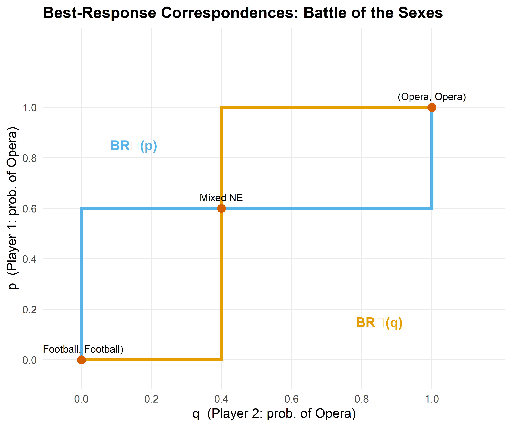

Definition, existence, computation, and multiplicity of Nash equilibrium — the central solution concept in non-cooperative game theory.
Keywords
Nash equilibrium, existence, best response, computation, support enumeration
6 Nash Equilibrium
Learning objectives
Define Nash equilibrium in terms of best responses and unilateral deviations.
State Nash’s existence theorem and understand why mixed strategies guarantee existence.
Compute pure-strategy and mixed-strategy Nash equilibria for 2×2 games in R.
Visualize best-response correspondences and identify equilibria graphically.
6.1 Motivation
Consider two competing firms choosing prices simultaneously. Each firm wants to maximize profit, but profit depends on the rival’s price. Firm A cannot simply optimize in isolation — it must reason about Firm B’s choice, knowing that Firm B is reasoning about Firm A in exactly the same way.
This mutual consistency requirement is the heart of Nash equilibrium: a strategy profile where no player can improve their payoff by changing their strategy alone, given what everyone else is doing. It is the most widely used solution concept in non-cooperative game theory, and the starting point for almost every applied analysis of strategic interaction.
6.2 Theory
6.2.1 Best responses
Given a finite game \(G = (N, (A_i)_{i \in N}, (u_i)_{i \in N})\) with player set \(N\), action sets \(A_i\), and payoff functions \(u_i\), player \(i\)’s best response to a strategy profile \(a_{-i}\) of the other players is any action that maximizes \(i\)’s payoff:
A strategy profile \(a^* = (a_1^*, \ldots, a_n^*)\) is a Nash equilibrium if every player’s strategy is a best response to the others:
\[
u_i(a_i^*, a_{-i}^*) \geq u_i(a_i, a_{-i}^*) \quad \forall\, a_i \in A_i, \; \forall\, i \in N
\tag{6.2}\]
Equivalently, \(a_i^* \in BR_i(a_{-i}^*)\) for all \(i\).
The definition captures a stability property: at a Nash equilibrium, no player has a profitable unilateral deviation. This does not mean the outcome is socially optimal (the Prisoner’s Dilemma shows otherwise), nor that players coordinate easily — it means the profile is self-enforcing once reached.
6.2.3 Existence
Nash (1950) proved that every finite game — one with finitely many players and finitely many actions per player — has at least one Nash equilibrium, possibly in mixed strategies. The proof uses Kakutani’s fixed-point theorem applied to the best-response correspondence.
Theorem: Nash’s Existence Theorem
Every finite game has at least one Nash equilibrium in mixed strategies.
The theorem does not guarantee a pure-strategy equilibrium. The game Matching Pennies, for instance, has no pure-strategy equilibrium but has a unique mixed equilibrium where each player randomizes 50-50 (see Chapter 7).
6.2.4 Multiplicity
Games can have zero, one, or many pure-strategy equilibria:
Matching Pennies — zero pure, one mixed.
Battle of the Sexes — two pure, one mixed.
Prisoner’s Dilemma — one pure (Defect, Defect), which is also the unique NE overall.
When multiple equilibria exist, selecting among them is a separate problem — the equilibrium selection problem — addressed by refinements such as subgame perfection (Chapter 8), trembling-hand perfection, and risk dominance.
6.3 Implementation in R
We implement two approaches: a pure-R solver for 2×2 games and a visualization of best-response correspondences.
for (eq in pure_bos) {cat(sprintf(" (%s, %s)\n", rownames(A_bos)[eq[1]], colnames(A_bos)[eq[2]]))}
#> (Opera, Opera)
#> (Football, Football)
cat(sprintf("\nMixed-strategy NE: p = %.2f, q = %.2f\n", mixed_bos$p, mixed_bos$q))
#>
#> Mixed-strategy NE: p = 0.60, q = 0.40
6.3.3 Best-response correspondence plot
# For a 2x2 game, let p = P(Player 1 plays row 1), q = P(Player 2 plays col 1)# Player 2's expected payoff from col 1: p * B[1,1] + (1-p) * B[2,1]# Player 2's expected payoff from col 2: p * B[1,2] + (1-p) * B[2,2]# Player 2 is indifferent when these are equalp_seq <-seq(0, 1, length.out =200)# Player 1's best response: BR1(q)# EU1(row1) = q*A[1,1] + (1-q)*A[1,2] = q*3# EU1(row2) = q*A[2,1] + (1-q)*A[2,2] = (1-q)*2# Indifferent when 3q = 2(1-q) => q = 2/5br1_q <-2/ (3+2) # q at which P1 is indifferent# Player 2's best response: BR2(p)# EU2(col1) = p*B[1,1] + (1-p)*B[2,1] = 2p# EU2(col2) = p*B[1,2] + (1-p)*B[2,2] = 3(1-p)# Indifferent when 2p = 3(1-p) => p = 3/5br2_p <-3/ (2+3) # p at which P2 is indifferent# Build best-response databr_data <-tibble(q =c(0, br1_q, br1_q, br1_q, 1),p_br1 =c(0, 0, 0.5, 1, 1),type ="Player 1 BR")br2_data <-tibble(p =c(0, br2_p, br2_p, br2_p, 1),q_br2 =c(0, 0, 0.5, 1, 1),type ="Player 2 BR")# Equilibrium pointseq_points <-tibble(p =c(0, br2_p, 1),q =c(0, br1_q, 1),label =c("(Football, Football)", "Mixed NE", "(Opera, Opera)"))p_fig <-ggplot() +geom_path(data = br_data, aes(x = q, y = p_br1),colour = okabe_ito[1], linewidth =1.2) +geom_path(data = br2_data, aes(x = q_br2, y = p),colour = okabe_ito[2], linewidth =1.2) +geom_point(data = eq_points, aes(x = q, y = p),size =3, colour = okabe_ito[6]) +geom_text(data = eq_points, aes(x = q, y = p, label = label),vjust =-1, size =3) +annotate("text", x =0.85, y =0.15, label ="BR₁(q)",colour = okabe_ito[1], fontface ="bold", size =4) +annotate("text", x =0.15, y =0.85, label ="BR₂(p)",colour = okabe_ito[2], fontface ="bold", size =4) +scale_x_continuous(name ="q (Player 2: prob. of Opera)",limits =c(-0.05, 1.15), breaks =seq(0, 1, 0.2)) +scale_y_continuous(name ="p (Player 1: prob. of Opera)",limits =c(-0.05, 1.25), breaks =seq(0, 1, 0.2)) +theme_publication() +labs(title ="Best-Response Correspondences: Battle of the Sexes")p_figsave_pub_fig(p_fig, "best-response-bos")

Figure 6.1: Best-response correspondences for the Battle of the Sexes. Player 1’s best response (orange) and Player 2’s best response (blue) intersect at three Nash equilibria: two pure-strategy and one mixed.
6.4 Worked example
Consider a coordination game where two drivers approach each other on a road and must choose to swerve Left or Right:
for (eq in eq_coord$pure) {cat(sprintf(" (%s, %s)\n", rownames(A_coord)[eq[1]], colnames(A_coord)[eq[2]]))}
#> (Left, Left)
#> (Right, Right)
if (!is.null(eq_coord$mixed)) {cat(sprintf("\nMixed NE: p = %.2f, q = %.2f\n", eq_coord$mixed$p, eq_coord$mixed$q))cat("Expected payoff at mixed NE: ", eq_coord$mixed$p * eq_coord$mixed$q *1+ (1- eq_coord$mixed$p) * (1- eq_coord$mixed$q) *1, "\n")}
#>
#> Mixed NE: p = 0.50, q = 0.50
#> Expected payoff at mixed NE: 0.5
The coordination game has two pure NE — (Left, Left) and (Right, Right) — and a mixed NE at \(p = q = 0.5\) with expected payoff 0.5, which is worse than either pure equilibrium. This illustrates that mixed equilibria can be Pareto-dominated by pure ones: the randomization creates a risk of miscoordination.
6.5 Extensions
Nash equilibrium is the foundation on which most of the rest of this book builds:
Mixed strategies (Chapter 7) formalize the randomization used in the mixed NE above.
Extensive-form games (Chapter 8) introduce sequential moves and subgame perfect equilibrium, a refinement of Nash equilibrium.
Bayesian games (Chapter 9) extend Nash equilibrium to settings with incomplete information.
Repeated games (Chapter 10) show how the folk theorem expands the set of equilibria when games are played repeatedly.
For a comprehensive treatment of Nash equilibrium and its refinements, see Osborne (2004) (Chapters 2–4).
Exercises
Stag Hunt. Consider the Stag Hunt game with payoffs: both hunt Stag yields (4, 4), both hunt Hare yields (3, 3), one hunts Stag while the other hunts Hare yields (0, 3) for the Stag hunter and (3, 0) for the Hare hunter. Find all pure-strategy and mixed-strategy Nash equilibria. Which equilibrium is risk-dominant? Which is payoff-dominant?
Three equilibria. Construct a 2×2 game that has exactly two pure-strategy Nash equilibria and one mixed-strategy Nash equilibrium. Verify your answer using the support_enumeration() function from R/solvers.R.
Best-response plot. Modify the best-response correspondence code in Section 6.3 to plot the correspondences for the game of Chicken (payoffs: (0, 0) for mutual swerve, (−1, 1) and (1, −1) for one swerving, (−5, −5) for neither swerving). How many equilibria does the plot reveal?
Nash, J. F. (1950). Equilibrium points in n-person games. In Proceedings of the National Academy of Sciences (Vol. 36, pp. 48–49). https://doi.org/10.1073/pnas.36.1.48
Osborne, M. J. (2004). An introduction to game theory. Oxford University Press.
Source Code
---title: "Nash Equilibrium"short-title: "Nash Equilibrium"author: "Raban Heller"date-modified: todayabstract: "Definition, existence, computation, and multiplicity of Nash equilibrium — the central solution concept in non-cooperative game theory."keywords: ["Nash equilibrium", "existence", "best response", "computation", "support enumeration"]---# Nash Equilibrium {#sec-nash-equilibrium}```{r}#| label: setup#| include: falsesource(here::here("R", "_common.R"))```## Learning objectives {.unnumbered}- Define Nash equilibrium in terms of best responses and unilateral deviations.- State Nash's existence theorem and understand why mixed strategies guarantee existence.- Compute pure-strategy and mixed-strategy Nash equilibria for 2×2 games in R.- Visualize best-response correspondences and identify equilibria graphically.## MotivationConsider two competing firms choosing prices simultaneously. Each firm wants to maximize profit, but profit depends on the rival's price. Firm A cannot simply optimize in isolation — it must reason about Firm B's choice, knowing that Firm B is reasoning about Firm A in exactly the same way.This mutual consistency requirement is the heart of Nash equilibrium: a strategy profile where no player can improve their payoff by changing their strategy alone, given what everyone else is doing. It is the most widely used solution concept in non-cooperative game theory, and the starting point for almost every applied analysis of strategic interaction.## Theory### Best responsesGiven a finite game $G = (N, (A_i)_{i \in N}, (u_i)_{i \in N})$ with player set $N$, action sets $A_i$, and payoff functions $u_i$, player $i$'s **best response** to a strategy profile $a_{-i}$ of the other players is any action that maximizes $i$'s payoff:$$BR_i(a_{-i}) = \arg\max_{a_i \in A_i} u_i(a_i, a_{-i})$$ {#eq-best-response}### Nash equilibrium defined::: {.callout-note}## Definition: Nash EquilibriumA strategy profile $a^* = (a_1^*, \ldots, a_n^*)$ is a **Nash equilibrium** if every player's strategy is a best response to the others:$$u_i(a_i^*, a_{-i}^*) \geq u_i(a_i, a_{-i}^*) \quad \forall\, a_i \in A_i, \; \forall\, i \in N$$ {#eq-nash-def}Equivalently, $a_i^* \in BR_i(a_{-i}^*)$ for all $i$.:::The definition captures a stability property: at a Nash equilibrium, no player has a profitable **unilateral** deviation. This does not mean the outcome is socially optimal (the Prisoner's Dilemma shows otherwise), nor that players coordinate easily — it means the profile is self-enforcing once reached.### ExistenceNash [-@nash1950] proved that every finite game — one with finitely many players and finitely many actions per player — has at least one Nash equilibrium, possibly in mixed strategies. The proof uses Kakutani's fixed-point theorem applied to the best-response correspondence.::: {.callout-tip}## Theorem: Nash's Existence TheoremEvery finite game has at least one Nash equilibrium in mixed strategies.:::The theorem does not guarantee a *pure-strategy* equilibrium. The game Matching Pennies, for instance, has no pure-strategy equilibrium but has a unique mixed equilibrium where each player randomizes 50-50 (see @sec-mixed-strategies).### MultiplicityGames can have zero, one, or many pure-strategy equilibria:- **Matching Pennies** — zero pure, one mixed.- **Battle of the Sexes** — two pure, one mixed.- **Prisoner's Dilemma** — one pure (Defect, Defect), which is also the unique NE overall.When multiple equilibria exist, selecting among them is a separate problem — the **equilibrium selection** problem — addressed by refinements such as subgame perfection (@sec-extensive-form), trembling-hand perfection, and risk dominance.## Implementation in R {#sec-nash-implementation}We implement two approaches: a pure-R solver for 2×2 games and a visualization of best-response correspondences.### Finding pure-strategy Nash equilibria```{r}#| label: pure-nash-solversource(here::here("R", "solvers.R"))# Prisoner's Dilemma payoff matrices# Rows = Player 1 actions (C, D), Cols = Player 2 actions (C, D)A <-matrix(c(3, 0, 5, 1), nrow =2, byrow =TRUE,dimnames =list(c("C", "D"), c("C", "D")))B <-matrix(c(3, 5, 0, 1), nrow =2, byrow =TRUE,dimnames =list(c("C", "D"), c("C", "D")))cat("Player 1 payoffs:\n")Acat("\nPlayer 2 payoffs:\n")Bpure_ne <-solve_2x2_pure_nash(A, B)cat("\nPure-strategy Nash equilibria:\n")for (eq in pure_ne) {cat(sprintf(" (%s, %s) with payoffs (%d, %d)\n",rownames(A)[eq[1]], colnames(A)[eq[2]], A[eq[1], eq[2]], B[eq[1], eq[2]]))}```### Battle of the Sexes — multiple equilibria```{r}#| label: bos-equilibria# Battle of the SexesA_bos <-matrix(c(3, 0, 0, 2), nrow =2, byrow =TRUE,dimnames =list(c("Opera", "Football"), c("Opera", "Football")))B_bos <-matrix(c(2, 0, 0, 3), nrow =2, byrow =TRUE,dimnames =list(c("Opera", "Football"), c("Opera", "Football")))cat("Battle of the Sexes:\n")cat("Player 1 payoffs:\n")A_boscat("\nPlayer 2 payoffs:\n")B_bospure_bos <-solve_2x2_pure_nash(A_bos, B_bos)mixed_bos <-solve_2x2_mixed_nash(A_bos, B_bos)cat("\nPure-strategy NE:\n")for (eq in pure_bos) {cat(sprintf(" (%s, %s)\n", rownames(A_bos)[eq[1]], colnames(A_bos)[eq[2]]))}cat(sprintf("\nMixed-strategy NE: p = %.2f, q = %.2f\n", mixed_bos$p, mixed_bos$q))```### Best-response correspondence plot```{r}#| label: fig-best-response#| fig-cap: "Best-response correspondences for the Battle of the Sexes. Player 1's best response (orange) and Player 2's best response (blue) intersect at three Nash equilibria: two pure-strategy and one mixed."#| fig-width: 6#| fig-height: 5# For a 2x2 game, let p = P(Player 1 plays row 1), q = P(Player 2 plays col 1)# Player 2's expected payoff from col 1: p * B[1,1] + (1-p) * B[2,1]# Player 2's expected payoff from col 2: p * B[1,2] + (1-p) * B[2,2]# Player 2 is indifferent when these are equalp_seq <-seq(0, 1, length.out =200)# Player 1's best response: BR1(q)# EU1(row1) = q*A[1,1] + (1-q)*A[1,2] = q*3# EU1(row2) = q*A[2,1] + (1-q)*A[2,2] = (1-q)*2# Indifferent when 3q = 2(1-q) => q = 2/5br1_q <-2/ (3+2) # q at which P1 is indifferent# Player 2's best response: BR2(p)# EU2(col1) = p*B[1,1] + (1-p)*B[2,1] = 2p# EU2(col2) = p*B[1,2] + (1-p)*B[2,2] = 3(1-p)# Indifferent when 2p = 3(1-p) => p = 3/5br2_p <-3/ (2+3) # p at which P2 is indifferent# Build best-response databr_data <-tibble(q =c(0, br1_q, br1_q, br1_q, 1),p_br1 =c(0, 0, 0.5, 1, 1),type ="Player 1 BR")br2_data <-tibble(p =c(0, br2_p, br2_p, br2_p, 1),q_br2 =c(0, 0, 0.5, 1, 1),type ="Player 2 BR")# Equilibrium pointseq_points <-tibble(p =c(0, br2_p, 1),q =c(0, br1_q, 1),label =c("(Football, Football)", "Mixed NE", "(Opera, Opera)"))p_fig <-ggplot() +geom_path(data = br_data, aes(x = q, y = p_br1),colour = okabe_ito[1], linewidth =1.2) +geom_path(data = br2_data, aes(x = q_br2, y = p),colour = okabe_ito[2], linewidth =1.2) +geom_point(data = eq_points, aes(x = q, y = p),size =3, colour = okabe_ito[6]) +geom_text(data = eq_points, aes(x = q, y = p, label = label),vjust =-1, size =3) +annotate("text", x =0.85, y =0.15, label ="BR₁(q)",colour = okabe_ito[1], fontface ="bold", size =4) +annotate("text", x =0.15, y =0.85, label ="BR₂(p)",colour = okabe_ito[2], fontface ="bold", size =4) +scale_x_continuous(name ="q (Player 2: prob. of Opera)",limits =c(-0.05, 1.15), breaks =seq(0, 1, 0.2)) +scale_y_continuous(name ="p (Player 1: prob. of Opera)",limits =c(-0.05, 1.25), breaks =seq(0, 1, 0.2)) +theme_publication() +labs(title ="Best-Response Correspondences: Battle of the Sexes")p_figsave_pub_fig(p_fig, "best-response-bos")```## Worked exampleConsider a coordination game where two drivers approach each other on a road and must choose to swerve Left or Right:```{r}#| label: coordination-exampleA_coord <-matrix(c(1, 0, 0, 1), nrow =2, byrow =TRUE,dimnames =list(c("Left", "Right"), c("Left", "Right")))B_coord <- A_coord # symmetric gamecat("Coordination Game (symmetric):\n")A_coordeq_coord <-support_enumeration(A_coord, B_coord)cat("\nPure-strategy NE:\n")for (eq in eq_coord$pure) {cat(sprintf(" (%s, %s)\n", rownames(A_coord)[eq[1]], colnames(A_coord)[eq[2]]))}if (!is.null(eq_coord$mixed)) {cat(sprintf("\nMixed NE: p = %.2f, q = %.2f\n", eq_coord$mixed$p, eq_coord$mixed$q))cat("Expected payoff at mixed NE: ", eq_coord$mixed$p * eq_coord$mixed$q *1+ (1- eq_coord$mixed$p) * (1- eq_coord$mixed$q) *1, "\n")}```The coordination game has two pure NE — (Left, Left) and (Right, Right) — and a mixed NE at $p = q = 0.5$ with expected payoff 0.5, which is worse than either pure equilibrium. This illustrates that mixed equilibria can be Pareto-dominated by pure ones: the randomization creates a risk of miscoordination.## ExtensionsNash equilibrium is the foundation on which most of the rest of this book builds:- **Mixed strategies** (@sec-mixed-strategies) formalize the randomization used in the mixed NE above.- **Extensive-form games** (@sec-extensive-form) introduce sequential moves and **subgame perfect equilibrium**, a refinement of Nash equilibrium.- **Bayesian games** (@sec-bayesian-games) extend Nash equilibrium to settings with incomplete information.- **Repeated games** (@sec-repeated-games) show how the folk theorem expands the set of equilibria when games are played repeatedly.For a comprehensive treatment of Nash equilibrium and its refinements, see @osborne2004 (Chapters 2–4).## Exercises {.unnumbered}1. **Stag Hunt.** Consider the Stag Hunt game with payoffs: both hunt Stag yields (4, 4), both hunt Hare yields (3, 3), one hunts Stag while the other hunts Hare yields (0, 3) for the Stag hunter and (3, 0) for the Hare hunter. Find all pure-strategy and mixed-strategy Nash equilibria. Which equilibrium is risk-dominant? Which is payoff-dominant?2. **Three equilibria.** Construct a 2×2 game that has exactly two pure-strategy Nash equilibria and one mixed-strategy Nash equilibrium. Verify your answer using the `support_enumeration()` function from `R/solvers.R`.3. **Best-response plot.** Modify the best-response correspondence code in @sec-nash-implementation to plot the correspondences for the game of Chicken (payoffs: (0, 0) for mutual swerve, (−1, 1) and (1, −1) for one swerving, (−5, −5) for neither swerving). How many equilibria does the plot reveal?Solutions appear in @sec-solutions.